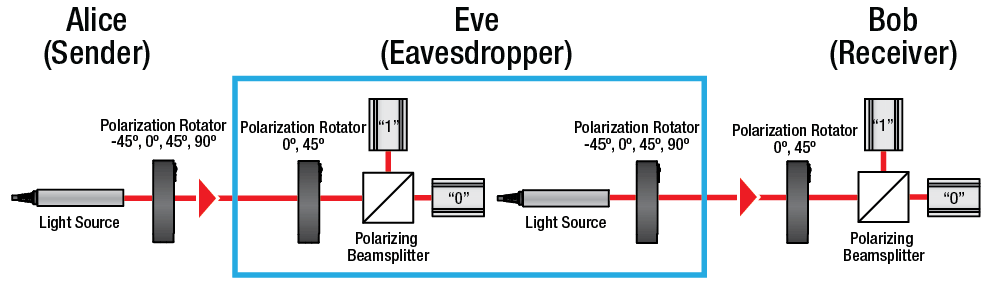

Despite its potential benefits, quantum cryptography is still a relatively new and complex technology. It requires specialized equipment and expertise, which can make it expensive and difficult to implement. Additionally, the technology is still being developed and improved, which means that it is not yet widely available or reliable. Overall, quantum cryptography is a promising technology that has the potential to revolutionize the field of cryptography and provide a more secure way of transmitting information. As research in this area continues to advance, it is likely that we will see more widespread adoption and use of quantum cryptography in the future
In the context of national security, quantum cryptography could provide an additional layer of protection against cyber attacks and espionage by foreign entities. By using quantum cryptography to secure sensitive communications and data, the United States could potentially prevent attacks that would otherwise compromise its national security.
Cybersecurity is one of the United States' top problems. The average cost of a data breach for the US is 9.44 million dollars according to IBM and in the first half of 2022 alone, the United States came in at a total of 817 cases. The country is currently losing 15.5 trillion dollars a year. However, this can be helped with the usage of quantum cryptography!
Today, the two main forms of encrypting are symmetric and asymmetric encription. Quantum computers are currently being researched, and CSIS actually said that they have allocated over $790 million to develop quantum technologies. Hackers are stealing data today so that these quantum computers can crack it soon.
Utilizing quantum cryptography instead of the traditional symmetric and asymmetric cryptography we most commonly use would be incredibly beneficial. If NATO and the US helped organizations to do so, this would allow citizens and companies to:
The United States spends 10.9 billion dollars on cybersecurity annually, and around 2.5 billion of these dollars go towards CISA (Cybersecurity and INfrastructure Security Agency). We have almost a 300 million dollar budget surplus in CISA. This money can be used to give funding to quantum cryptography orgnaizations such as Arqit and QuSecure. This transition could slowly be phased, prioritizing some companies, but eventually reaching all, leading to a profit. This would also be a self-finding idea as due to the US losing 15 trillion dollars a year, if even 1/10 of these attacks are being diverted a year due to improvements, the money saved could be used and dedicated towards continuing this plan, leading to a bigger profit each time.
